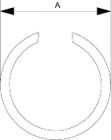
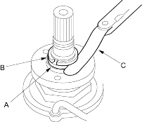
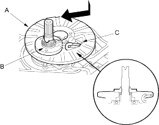

- Verify that snap ring outside diameter (A) is 26.3 mm (1.04 in.) or less.

- Measure the clearance between the 22 x 28 mm thrust shim (A) and snap ring (B) with a feeler gauge (C).
NOTE: Take measurements in at least three places and use the average as the actual clearance.
STANDARD: 0.37-0.65 mm (0.015-0.026 in.)

- If the clearance is out of standard, remove the 22 x 28 mm thrust shim and measure its thickness.
- Select and install the new 22 x 28 mm thrust shim, then recheck.
THRUST SHIM, 22 x 28 mm
| No. | Part Number | Thickness |
| C | 90573-P4V-000 | 1.15 mm (0.045 in.) |
| D | 90574-P4V-000 | 1.40 mm (0.055 in.) |
| E | 90575-P4V-000 | 1.65 mm (0.065 in.) |
| F | 90576-P4V-000 | 1.90 mm (0.075 in.) |
| G | 90577-P4V-000 | 2.15 mm (0.085 in.) |
| H | 90578-P4V-000 | 2.40 mm (0.095 in.) |
- After replacing the 22 x 28 mm thrust shim, make sure that the clearance is with in the tolerance and the snap ring outside diameter is correct.
- Install the pitot flange (A) using its cutout (B) as shown to clear the pitot pipes (C).
